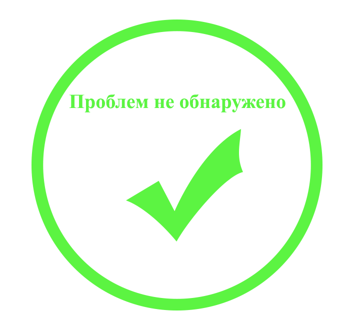
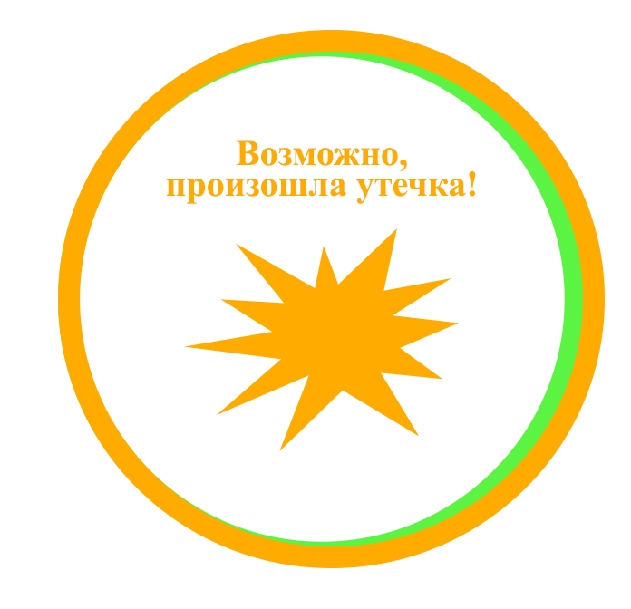
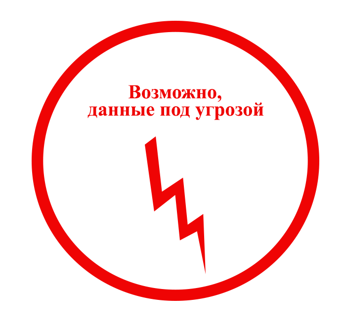

СПОСОБЫ ИСПОЛЬЗОВАНИЯ ВАШИХ ДАННЫХ ПРИ ИХ УТЕЧКЕ
Мобильное мошенничество
Беспокойство за близких людей, волнение, неожиданность – на это рассчитывают преступники, планирующие совершить мошенничество. Таким образом, телефонными звонками или сообщениями о помощи можешенники реализовывают задуманное.
Беспокойство за близких людей, волнение, неожиданность – на это рассчитывают преступники, планирующие совершить мошенничество. Таким образом, телефонными звонками или сообщениями о помощи можешенники реализовывают задуманное.
Решение
Поиск во Vkontakte
Поиск во Vkontakte
Кредитное мошенничество
Когда происходит утечка Ваших паспортных данных в Интернет, ими могут воспользоваться мошенники и оформить кредит в банке, либо в микрокредитной организации. Разбирательство может отнять у Вас много времени и сил и не факт, что результат будет положительный.
Когда происходит утечка Ваших паспортных данных в Интернет, ими могут воспользоваться мошенники и оформить кредит в банке, либо в микрокредитной организации. Разбирательство может отнять у Вас много времени и сил и не факт, что результат будет положительный.
Решение
Поиск в Google
Поиск в Google
Мошенничество с банковскими картами
Обладая Вашими данными с кредитной карты, мошенники могут либо сами воспользоваться полученной информацией (обезналичить денежные средства, либо приобрести услугу или товар на сайтах, которые не предусматривают 3D secure, то есть подтверждение совершения операции по специальному коду, приходящему на привязанный телефон к карте), либо продать их на специальные биржи.
Обладая Вашими данными с кредитной карты, мошенники могут либо сами воспользоваться полученной информацией (обезналичить денежные средства, либо приобрести услугу или товар на сайтах, которые не предусматривают 3D secure, то есть подтверждение совершения операции по специальному коду, приходящему на привязанный телефон к карте), либо продать их на специальные биржи.
Решение
Поиск в Yandex
Поиск в Yandex
Мошенничество c ИНН и паспортными данными
По чужим паспортным данным с ИНН мошенники могут зарегистрировать предприятие и осуществлять через него сомнительные операции, получать льготные кредиты и как следствие накапливать долги. После регистрации предприятия у мошенников появится огромное поле деятельности для совершения противоправных действий:
1. Приобретение недвижимости;
2. Оформить кредит в банке;
3. Получить дубликат документов для совершения различных сделок;
По чужим паспортным данным с ИНН мошенники могут зарегистрировать предприятие и осуществлять через него сомнительные операции, получать льготные кредиты и как следствие накапливать долги. После регистрации предприятия у мошенников появится огромное поле деятельности для совершения противоправных действий:
1. Приобретение недвижимости;
2. Оформить кредит в банке;
3. Получить дубликат документов для совершения различных сделок;
Решение
Универсальный поиск
Универсальный поиск
Мошенничество со СНИЛС
Обладая вашим номером СНИЛС, мошенники могут перевести деньги из накопительной части вашей пенсии из Пенсионного фонда России в любой негосударственный пенсионный фонд (НПФ). Вы можете об этом даже не узнать.
Обладая вашим номером СНИЛС, мошенники могут перевести деньги из накопительной части вашей пенсии из Пенсионного фонда России в любой негосударственный пенсионный фонд (НПФ). Вы можете об этом даже не узнать.
Решение
Автоматический поиск
Автоматический поиск
Мошенничество с паспортными данными и ФИО
Зная такие данные, мошенники могут на различных онлайн-сервисах, где для регистрации необходимо указать номер паспорта, серию, Ф.И.О. и дату рождения, выдать себя за тех людей, которыми не являются, а от этого может пострадать не только Ваша репутация.
Зная такие данные, мошенники могут на различных онлайн-сервисах, где для регистрации необходимо указать номер паспорта, серию, Ф.И.О. и дату рождения, выдать себя за тех людей, которыми не являются, а от этого может пострадать не только Ваша репутация.
Решение
Результаты последних проверок
Результаты последних проверок
ИСТОЧНИКИ ДАННЫХ
Основные источники распространения персональных данных, которые данный сервис отслеживает
Социальные сети
Поисковая система Google
Поисковая система Yandex